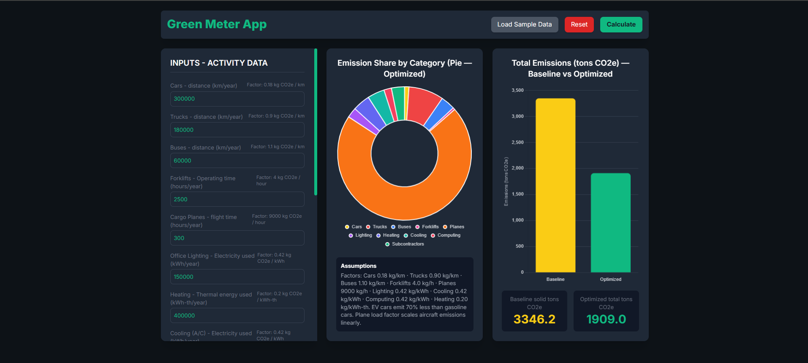

Grade 12 · building toward a junior cybersecurity engineering role. The Green Meter App is the proof: an interactive Python emissions calculator, built and debugged with AI as a working partner.
Ten activity inputs — fleet distance, forklift hours, office energy, subcontractor estimates — feed a baseline calculation. Three adjustment sliders (EV share, distance reduction, cargo load factor) model an optimized scenario against it. This is the actual output, not a mockup.
